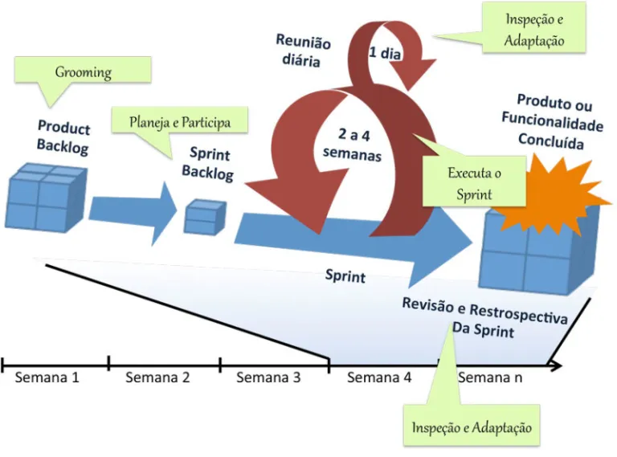
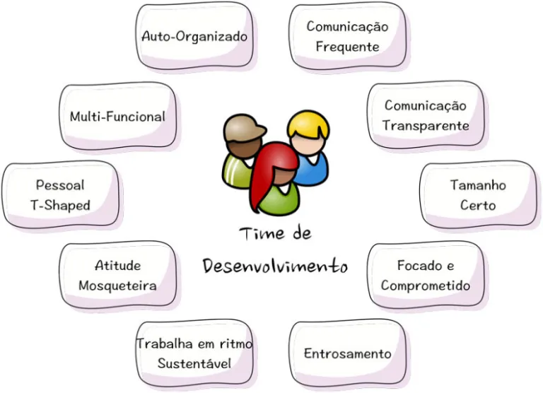

A equipe de desenvolvimento é responsável por criar o produto ou entregar o projeto. Eles são especialistas em diversas áreas, como programação, design e testes, e trabalham juntos para transformar as necessidades do cliente em incrementos funcionais do produto, isto é, entregar a cada sprint a parte mais funcional do produto até o fim da entrega final. Por tanto essa parte da equipe é o time que constrói efetivamente o que foi planejado, transformando as ideias em realidade.
 